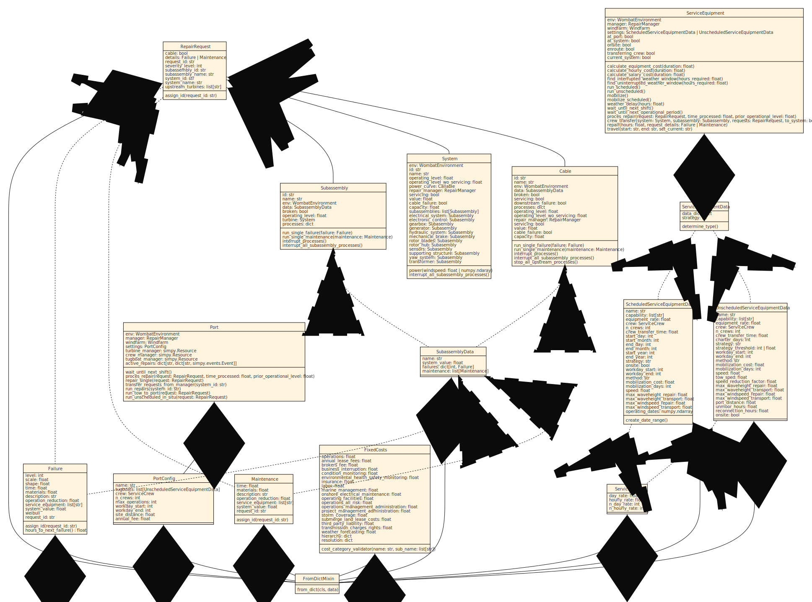

Data Classes
Contents
Data Classes#
The WOMBAT architecture relies heavily on a base set of data classes to process most of the model’s inputs. This enables a rigid, yet robust data model to properly define a simulation.
{kind=link}
What is this FromDictMixin I keep seeing in the code diagrams?#
The FromDictMixin class provides a standard method for providing dictionary definitions
to attrs dataclasses without worrying about overloading the definition. Plus, you get
the convenience of writing cls.from_dict(data_dict) instead of cls(**data_dict), and
hoping for the best.
- class wombat.core.data_classes.FromDictMixin#
A Mixin class to allow for kwargs overloading when a data class doesn’t have a specific parameter definied. This allows passing of larger dictionaries to a data class without throwing an error.
- Raises
AttributeError – Raised if the required class inputs are not provided.
- classmethod from_dict(data: dict)#
Map a data dictionary to an attrs-defined class.
TODO: Add an error to ensure that either none or all the parameters are passed
- Parameters
data (dict) – The data dictionary to be mapped.
- Returns
cls – The attrs-defined class.
- Return type
Any
Maintenance Tasks#
- class wombat.core.data_classes.Maintenance(time, materials, frequency, service_equipment: Union[Sequence, str, int, float], system_value, description='routine maintenance', operation_reduction=0.0, level=0)#
Data class to store maintenance data used in subassembly and cable modeling.
- Parameters
time (float) – Amount of time required to perform maintenance, in hours.
materials (float) – Cost of materials required to perform maintenance, in USD.
frequency (float) – Optimal number of days between performing maintenance, in days.
service_equipment (list[str] | str) – Any combination of th following
Equipment.capabilityoptions.RMT: remote (no actual equipment BUT no special implementation)
DRN: drone
CTV: crew transfer vessel/vehicle
SCN: small crane (i.e., field support vessel)
LCN: large crane (i.e., heavy lift vessel)
CAB: cabling vessel/vehicle
DSV: diving support vessel
TOW: tugboat or towing equipment
AHV: anchor handling vessel (tugboat that doesn’t trigger tow-to-port)
system_value (Union[int, float]) – Turbine replacement value. Used if the materials cost is a proportional cost.
description (str) – A short text description to be used for logging.
operation_reduction (float) – Performance reduction caused by the failure, between (0, 1]. Defaults to 0.
Warning
As of v0.7, availability is very sensitive to the usage of this parameter, and so it should be used carefully.
level (int, optional) – Severity level of the maintenance. Defaults to 0.
- assign_id(request_id: str) None#
Assign a unique identifier to the request.
- Parameters
request_id (str) – The
wombat.core.RepairManagergenerated identifier.
- replacement: bool#
- request_id: str#
- service_equipment: list[str]#
Failures#
- class wombat.core.data_classes.Failure(scale, shape, time, materials, operation_reduction, level, service_equipment: Union[Sequence, str, int, float], system_value, rng: numpy.random._generator.Generator, replacement=False, description='failure')#
Data class to store failure data used in subassembly and cable modeling.
- Parameters
scale (float) – Weibull scale parameter for a failure classification.
shape (float) – Weibull shape parameter for a failure classification.
time (float) – Amount of time required to complete the repair, in hours.
materials (float) – Cost of the materials required to complete the repair, in $USD.
operation_reduction (float) – Performance reduction caused by the failure, between (0, 1].
Warning
As of v0.7, availability is very sensitive to the usage of this parameter, and so it should be used carefully.
level (int, optional) – Level of severity, will be generated in the
ComponentData.create_severitiesmethod.service_equipment (list[str] | str) – Any combination of the following
Equipment.capabilityoptions:RMT: remote (no actual equipment BUT no special implementation)
DRN: drone
CTV: crew transfer vessel/vehicle
SCN: small crane (i.e., field support vessel)
LCN: large crane (i.e., heavy lift vessel)
CAB: cabling vessel/vehicle
DSV: diving support vessel
TOW: tugboat or towing equipment
AHV: anchor handling vessel (tugboat that doesn’t trigger tow-to-port)
system_value (Union[int, float]) – Turbine replacement value. Used if the materials cost is a proportional cost.
replacement (bool) – True if triggering the failure requires a subassembly replacement, False, if only a repair is necessary. Defaults to False
description (str) – A short text description to be used for logging.
rng (np.random._generator.Generator) –
Note
Do not provide this, it comes from
wombat.core.environment.WombatEnvironmentThe shared random generator used for the Weibull sampling. This is fed through the simulation environment to ensure consistent seeding between simulations.
- assign_id(request_id: str) None#
Assign a unique identifier to the request.
- Parameters
request_id (str) – The
wombat.core.RepairManagergenerated identifier.
- hours_to_next_failure() float | None#
Sample the next time to failure in a Weibull distribution. If the
scaleandshapeparameters are set to 0, then the model will returnNoneto cause the subassembly to timeout to the end of the simulation.- Returns
Returns
Nonefor a non-modelled failure, or the time until the next simulated failure.- Return type
float | None
- replacement: bool#
- request_id: str#
- rng: numpy.random._generator.Generator#
- service_equipment: list[str] | str#
Service Equipment#
- class wombat.core.data_classes.ServiceEquipmentData(data_dict: dict, *, strategy: Optional[str] = None)#
Helps to determine the type ServiceEquipment that should be used, based on the repair strategy for its operation. See
ScheduledServiceEquipmentDataorUnscheduledServiceEquipmentDatafor more details on each classifcation.- Parameters
data_dict (dict) – The dictionary that will be used to create the appropriate ServiceEquipmentData. This should contain a field called ‘strategy’ with either “scheduled” or “unscheduled” as a value if strategy is not provided as a keyword argument.
strategy (str, optional) – Should be one of “scheduled”, “requests”, “downtime”. If nothing is provided, the equipment configuration will be checked.
- Raises
ValueError – Raised if
strategyis not one of “scheduled” or “unscheduled”.
Examples
The below workflow is how a new data
ScheduledServiceEquipmentDataobject could be created via a generic/routinized creation method, and is how theServiceEquipment’s__init__method creates the settings data.>>> from wombat.core.data_classes import ServiceEquipmentData >>> >>> data_dict = { >>> "name": "Crew Transfer Vessel 1", >>> "equipment_rate": 1750, >>> "start_month": 1, >>> "start_day": 1, >>> "end_month": 12, >>> "end_day": 31, >>> "start_year": 2002, >>> "end_year": 2014, >>> "onsite": True, >>> "capability": "CTV", >>> "max_severity": 10, >>> "mobilization_cost": 0, >>> "mobilization_days": 0, >>> "speed": 37.04, >>> "max_windspeed_transport": 99, >>> "max_windspeed_repair": 99, >>> "max_waveheight_transport": 1.5, >>> "max_waveheight_repair": 1.5, >>> "strategy": scheduled, >>> "crew_transfer_time": 0.25, >>> "n_crews": 1, >>> "crew": { >>> "day_rate": 0, >>> "n_day_rate": 0, >>> "hourly_rate": 0, >>> "n_hourly_rate": 0, >>> }, >>> } >>> equipment = ServiceEquipmentData(data_dict).determine_type() >>> type(equipment)
- determine_type() wombat.core.data_classes.ScheduledServiceEquipmentData | wombat.core.data_classes.UnscheduledServiceEquipmentData#
Generate the appropriate ServiceEquipmentData variation.
- Returns
The appropriate
xxServiceEquipmentDataschema depending on the strategy theServiceEquipmentwill use.- Return type
Union[ScheduledServiceEquipmentData, UnscheduledServiceEquipmentData]
ServiceCrew#
- class wombat.core.data_classes.ServiceCrew(n_day_rate, day_rate, n_hourly_rate, hourly_rate)#
An internal data class for the indivdual crew units that are on the servicing equipment.
- Parameters
n_day_rate (int) – Number of salaried workers.
day_rate (float) – Day rate for salaried workers, in USD.
n_hourly_rate (int) – Number of hourly/subcontractor workers.
hourly_rate (float) – Hourly labor rate for subcontractors, in USD.
Scheduled Service Equipment#
- class wombat.core.data_classes.ScheduledServiceEquipmentData(name, equipment_rate, n_crews, crew: dict, capability: Union[Sequence, str, int, float], speed, max_windspeed_transport, max_windspeed_repair, mobilization_cost=0, mobilization_days=0, max_waveheight_transport=1000.0, max_waveheight_repair=1000.0, workday_start=- 1, workday_end=- 1, crew_transfer_time=0.0, speed_reduction_factor=0.0, port_distance=0.0, onsite=False, method='severity', start_month=- 1, start_day=- 1, start_year=- 1, end_month=- 1, end_day=- 1, end_year=- 1, strategy: str = 'scheduled', non_operational_start: Optional[Union[str, datetime.datetime]] = None, non_operational_end: Optional[Union[str, datetime.datetime]] = None, reduced_speed_start: Optional[Union[str, datetime.datetime]] = None, reduced_speed_end: Optional[Union[str, datetime.datetime]] = None, reduced_speed=0)#
The data class specification for servicing equipment that will use a pre-scheduled basis for returning to site.
- Parameters
name (str) – Name of the piece of servicing equipment.
equipment_rate (float) – Day rate for the equipment/vessel, in USD.
n_crews (int) – Number of crew units for the equipment.
Note
the input to this does not matter yet, as multi-crew functionality is not yet implemented.
crew (ServiceCrew) – The crew details, see
ServiceCrewfor more information.start_month (int) – The day to start operations for the rig and crew.
start_day (int) – The month to start operations for the rig and crew.
start_year (int) – The year to start operations for the rig and crew.
end_month (int) – The month to end operations for the rig and crew.
end_day (int) – The day to end operations for the rig and crew.
end_year (int) – The year to end operations for the rig and crew.
Note
if the rig comes annually, then the enter the year for the last year that the rig and crew will be available.
capability (str) – The type of capabilities the equipment contains. Must be one of:
RMT: remote (no actual equipment BUT no special implementation)
DRN: drone
CTV: crew transfer vessel/vehicle
SCN: small crane (i.e., field support vessel)
LCN: large crane (i.e., heavy lift vessel)
CAB: cabling vessel/vehicle
DSV: diving support vessel
Please note that “TOW” is unavailable for scheduled servicing equipment
mobilization_cost (float) – Cost to mobilize the rig and crew.
mobilization_days (int) – Number of days it takes to mobilize the equipment.
speed (float) – Maximum transit speed, km/hr.
speed_reduction_factor (flaot) – Reduction factor for traveling in inclement weather, default 0. When 0, travel is stopped when either max_windspeed_transport or max_waveheight_transport is reached, and when 1, speed is used.
max_windspeed_transport (float) – Maximum windspeed for safe transport, m/s.
max_windspeed_repair (float) – Maximum windspeed for safe operations, m/s.
max_waveheight_transport (float) – Maximum waveheight for safe transport, m, default 1000 (land-based).
max_waveheight_repair (float) – Maximum waveheight for safe operations, m, default 1000 (land-based).
workday_start (int) – The starting hour of a workshift, in 24 hour time.
workday_end (int) – The ending hour of a workshift, in 24 hour time.
crew_transfer_time (float) – The number of hours it takes to transfer the crew from the equipment to the system, e.g. how long does it take to transfer the crew from the CTV to the turbine, default 0.
onsite (bool) – Indicator for if the rig and crew are based onsite.
Note
if the rig and crew are onsite be sure that the start and end dates represent the first and last day/month of the year, respectively, and the start and end years represent the fist and last year in the weather file.
method (str) – Determines if the ship will do all maximum severity repairs first or do all the repairs at one turbine before going to the next, by default severity. Should by one of “severity” or “turbine”.
port_distance (int | float) – The distance, in km, the equipment must travel to go between port and site, by default 0.
non_operational_start (str | datetime.datetime | None) – The starting month and day, e.g., MM/DD, M/D, MM-DD, etc. for an annualized period of prohibited operations. When defined at the environment level, an undefined or later starting date will be overridden, by default None.
non_operational_end (str | datetime.datetime | None) – The ending month and day, e.g., MM/DD, M/D, MM-DD, etc. for an annualized period of prohibited operations. When defined at the environment level, an undefined or earlier ending date will be overridden, by default None.
reduced_speed_start (str | datetime.datetime | None) – The starting month and day, e.g., MM/DD, M/D, MM-DD, etc. for an annualized period of reduced speed operations. When defined at the environment level, an undefined or later starting date will be overridden, by default None.
reduced_speed_end (str | datetime.datetime | None) – The ending month and day, e.g., MM/DD, M/D, MM-DD, etc. for an annualized period of reduced speed operations. When defined at the environment level, an undefined or earlier ending date will be overridden, by default None.
reduced_speed (float) – The maximum operating speed during the annualized reduced speed operations. When defined at the environment level, an undefined or faster value will be overridden, by default 0.0.
- non_operational_dates: pandas.core.indexes.datetimes.DatetimeIndex#
- non_operational_dates_set: pandas.core.indexes.datetimes.DatetimeIndex#
- non_operational_end: datetime.datetime#
- non_operational_start: datetime.datetime#
- non_stop_shift: bool#
- operating_dates_set: set#
- port_distance: float#
- reduced_speed: float#
- reduced_speed_dates: pandas.core.indexes.datetimes.DatetimeIndex#
- reduced_speed_end: datetime.datetime#
- reduced_speed_start: datetime.datetime#
- speed_reduction_factor: float#
Unscheduled Service Equipment#
- class wombat.core.data_classes.UnscheduledServiceEquipmentData(name, equipment_rate, n_crews, crew: dict, capability: Union[Sequence, str, int, float], speed, max_windspeed_transport, max_windspeed_repair, mobilization_cost=0, mobilization_days=0, max_waveheight_transport=1000.0, max_waveheight_repair=1000.0, workday_start=- 1, workday_end=- 1, crew_transfer_time=0.0, speed_reduction_factor=0.0, port_distance=0.0, onsite=False, method='severity', strategy: str | None = 'unscheduled', strategy_threshold=- 1, charter_days=- 1, tow_speed=1, unmoor_hours=0, reconnection_hours=0, non_operational_start: Optional[Union[str, datetime.datetime]] = None, non_operational_end: Optional[Union[str, datetime.datetime]] = None, reduced_speed_start: Optional[Union[str, datetime.datetime]] = None, reduced_speed_end: Optional[Union[str, datetime.datetime]] = None, reduced_speed=0)#
The data class specification for servicing equipment that will use either a basis of windfarm downtime or total number of requests serviceable by the equipment.
- Parameters
name (str) – Name of the piece of servicing equipment.
equipment_rate (float) – Day rate for the equipment/vessel, in USD.
n_crews (int) – Number of crew units for the equipment.
crew (ServiceCrew) – The crew details, see
ServiceCrewfor more information.charter_days (int) – The number of days the servicing equipment can be chartered for.
capability (str) – The type of capabilities the equipment contains. Must be one of: - RMT: remote (no actual equipment BUT no special implementation) - DRN: drone - CTV: crew transfer vessel/vehicle - SCN: small crane (i.e., field support vessel) - LCN: large crane (i.e., heavy lift vessel) - CAB: cabling vessel/vehicle - DSV: diving support vessel - TOW: tugboat or towing equipment - AHV: anchor handling vessel (tugboat that doesn’t trigger tow-to-port)
speed (float) – Maximum transit speed, km/hr.
tow_speed (float) – The maximum transit speed when towing, km/hr.
Note
This is only required for when the servicing equipment is tugboat enabled for a tow-to-port scenario (capability = “TOW”)
speed_reduction_factor (flaot) – Reduction factor for traveling in inclement weather, default 0. When 0, travel is stopped when either max_windspeed_transport or max_waveheight_transport is reached, and when 1, speed is used.
max_windspeed_transport (float) – Maximum windspeed for safe transport, m/s.
max_windspeed_repair (float) – Maximum windspeed for safe operations, m/s.
max_waveheight_transport (float) – Maximum waveheight for safe transport, m, default 1000 (land-based).
max_waveheight_repair (float) – Maximum waveheight for safe operations, m, default 1000 (land-based).
mobilization_cost (float) – Cost to mobilize the rig and crew, default 0.
mobilization_days (int) – Number of days it takes to mobilize the equipment, default 0.
strategy (str) – For any unscheduled maintenance servicing equipment, this determines the strategy for dispatching. Should be on of “downtime” or “requests”.
strategy_threshold (str) – For downtime-based scenarios, this is based on the operating level, and should be in the range (0, 1). For reqest-based scenarios, this is the maximum number of requests that are allowed to build up for any given type of unscheduled servicing equipment, should be an integer >= 1.
workday_start (int) – The starting hour of a workshift, in 24 hour time.
workday_end (int) – The ending hour of a workshift, in 24 hour time.
crew_transfer_time (float) – The number of hours it takes to transfer the crew from the equipment to the system, e.g. how long does it take to transfer the crew from the CTV to the turbine, default 0.
onsite (bool) – Indicator for if the rig and crew are based onsite.
Note
if the rig and crew are onsite be sure that the start and end dates represent the first and last day/month of the year, respectively, and the start and end years represent the fist and last year in the weather file.
method (str) – Determines if the ship will do all maximum severity repairs first or do all the repairs at one turbine before going to the next, by default severity. Should by one of “severity” or “turbine”.
unmoor_hours (int | float) – The number of hours required to unmoor a floating offshore wind turbine in order to tow it to port, by default 0.
Note
Required for the tugboat/towing capability, otherwise unused.
reconnection_hours (int | float) – The number of hours required to reconnect a floating offshore wind turbine after being towed back to site, by default 0.
Note
Required for the tugboat/towing capability, otherwise unused.
port_distance (int | float) – The distance, in km, the equipment must travel to go between port and site, by default 0.
non_operational_start (str | datetime.datetime | None) – The starting month and day, e.g., MM/DD, M/D, MM-DD, etc. for an annualized period of prohibited operations. When defined at the environment level or the port level, if a tugboat, an undefined or later starting date will be overridden, by default None.
non_operational_end (str | datetime.datetime | None) – The ending month and day, e.g., MM/DD, M/D, MM-DD, etc. for an annualized period of prohibited operations. When defined at the environment level or the port level, if a tugboat, an undefined or earlier ending date will be overridden, by default None.
reduced_speed_start (str | datetime.datetime | None) – The starting month and day, e.g., MM/DD, M/D, MM-DD, etc. for an annualized period of reduced speed operations. When defined at the environment level or the port level, if a tugboat, an undefined or later starting date will be overridden, by default None.
reduced_speed_end (str | datetime.datetime | None) – The ending month and day, e.g., MM/DD, M/D, MM-DD, etc. for an annualized period of reduced speed operations. When defined at the environment level or the port level, if a tugboat, an undefined or earlier ending date will be overridden, by default None.
reduced_speed (float) – The maximum operating speed during the annualized reduced speed operations. When defined at the environment level, an undefined or faster value will be overridden, by default 0.0.
- non_operational_dates: pandas.core.indexes.datetimes.DatetimeIndex#
- non_operational_dates_set: pandas.core.indexes.datetimes.DatetimeIndex#
- non_operational_end: datetime.datetime#
- non_operational_start: datetime.datetime#
- non_stop_shift: bool#
- port_distance: float#
- reconnection_hours: int | float#
- reduced_speed: float#
- reduced_speed_dates: pandas.core.indexes.datetimes.DatetimeIndex#
- reduced_speed_end: datetime.datetime#
- reduced_speed_start: datetime.datetime#
- speed_reduction_factor: float#
- tow_speed: float#
- unmoor_hours: int | float#
Subassembly Model#
- class wombat.core.data_classes.SubassemblyData(name, maintenance: list[wombat.core.data_classes.Maintenance | dict[str, float | str]], failures: list[wombat.core.data_classes.Failure | dict[str, float | str]] | dict[int, wombat.core.data_classes.Failure | dict[str, float | str]], system_value, rng: numpy.random._generator.Generator)#
Data storage and validation class for the subassemblies.
- Parameters
name (str) – Name of the component/subassembly.
maintenance (list[dict[str, float | str]]) – List of the maintenance classification dictionaries. This will be converted to a list of
Maintenanceobjects in the post initialization hook.failures (fict[int, dict[str, float | str]]) – Dictionary of failure classifications in a numerical (ordinal) categorization order. This will be converted to a dictionary of
Failureobjects in the post initialization hook.system_value (int | float) – Turbine’s cost of replacement. Used in case percentages of turbine cost are used in place of an absolute cost.
- rng: numpy.random._generator.Generator#
Fixed Cost Model#
- class wombat.core.data_classes.FixedCosts(operations: float = 0, operations_management_administration: float = 0, project_management_administration: float = 0, marine_management: float = 0, weather_forecasting: float = 0, condition_monitoring: float = 0, operating_facilities: float = 0, environmental_health_safety_monitoring: float = 0, insurance: float = 0, brokers_fee: float = 0, operations_all_risk: float = 0, business_interruption: float = 0, third_party_liability: float = 0, storm_coverage: float = 0, annual_leases_fees: float = 0, submerge_land_lease_costs: float = 0, transmission_charges_rights: float = 0, onshore_electrical_maintenance: float = 0, labor: float = 0)#
Fixed costs for operating a windfarm. All values are assumed to be in $/kW/yr.
- Parameters
operations (float) – Non-maintenance costs of operating the project. If a value is provided for this attribute, then it will zero out all other values, otherwise it will be set to the sum of the remaining values.
operations_management_administration (float) – Activities necessary to forecast, dispatch, sell, and manage the production of power from the plant. Includes both the onsite and offsite personnel, software, and equipment to coordinate high voltage equipment, switching, port activities, and marine activities.
Note
This should only be used when not breaking down the cost into the following categories:
project_management_administration,operation_management_administration,marine_management, and/orweather_forecastingproject_management_administration (float) – Financial reporting, public relations, procurement, parts and stock management, H&SE management, training, subcontracts, and general administration.
marine_management (float) – Coordination of port equipment, vessels, and personnel to carry out inspections and maintenance of generation and transmission equipment.
weather_forecasting (float) – Daily forecast of metocean conditions used to plan maintenance visits and estimate project power production.
condition_monitoring (float) – Monitoring of SCADA data from wind turbine components to optimize performance and identify component faults.
operating_facilities (float) – Co-located offices, parts store, quayside facilities, helipad, refueling facilities, hanger (if necesssary), etc.
environmental_health_safety_monitoring (float) – Coordination and monitoring to ensure compliance with HSE requirements during operations.
insurance (float) – Insurance policies during operational period including All Risk Property, Buisness Interuption, Third Party Liability, and Brokers Fee, and Storm Coverage.
Note
This should only be used when not breaking down the cost into the following categories:
brokers_fee,operations_all_risk,business_interruption,third_party_liability, and/orstorm_coveragebrokers_fee (float) – Fees for arranging the insurance package.
operations_all_risk (float) – All Risk Property (physical damage). Sudden and unforseen physical loss or physical damage to teh plant/assets during the operational phase of a project.
business_interruption (float) – Sudden and unforseen loss or physical damage to the plant/assets during the operational phase of a project causing an interruption.
third_party_liability (float) – Liability imposed by law, and/or Express Contractual Liability, for bodily injury or property damage.
storm_coverage (float) – Coverage from huricane and tropical storm events (tyipcally for Atlantic Coast projects).
annual_leases_fees (float) – Ongoing payments, including but not limited to: payments to regulatory body for permission to operate at project site (terms defined within lease); payments to Transmission Systems Operators or Transmission Asseet Owners for rights to transport generated power.
Note
This should only be used when not breaking down the cost into the following categories:
submerge_land_lease_costsand/ortransmission_charges_rightssubmerge_land_lease_costs (float) – Payments to submerged land owners for rights to build project during operations.
transmission_charges_rights (float) – Any payments to Transmissions Systems Operators or Transmission Asset Owners for rights to transport generated power.
onshore_electrical_maintenance (float) – Inspections of cables, transformer, switch gears, power compensation equipment, etc. and infrequent repairs
Warning
This should only be used if not modeling these as processes within the model. Currently, onshore modeling is not included.
labor (float) – The costs associated with labor, if not being modeled through the simulated processes.
Repair Requests#
- class wombat.core.data_classes.RepairRequest(system_id, system_name, subassembly_id, subassembly_name, severity_level, details: wombat.core.data_classes.Failure | wombat.core.data_classes.Maintenance, *, cable=False, upstream_turbines: list[str] = _Nothing.NOTHING, upstream_cables: list[str] = _Nothing.NOTHING)#
Repair/Maintenance request data class.
- Parameters
system_id (str) –
System.id.system_name (str) –
System.name.subassembly_id (str) –
Subassembly.id.subassembly_name (str) –
Subassembly.name.severity_level (int) –
Maintenance.levelorFailure.level.details (Failure | Maintenance) – The actual data class.
cable (bool) – Indicator that the request is for a cable, by default False.
upstream_turbines (list[str]) – The cable’s upstream turbines, by default []. No need to use this if
cable== False.upstream_cables (list[str]) – The cable’s upstream cables, by default []. No need to use this if
cable== False.
- assign_id(request_id: str) None#
Assign a unique identifier to the request.
- Parameters
request_id (str) – The
wombat.core.RepairManagergenerated identifier.
- request_id: str#
- upstream_cables: list[str]#